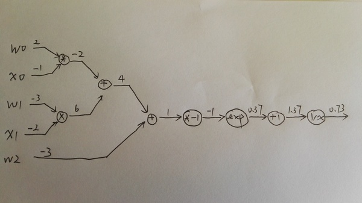
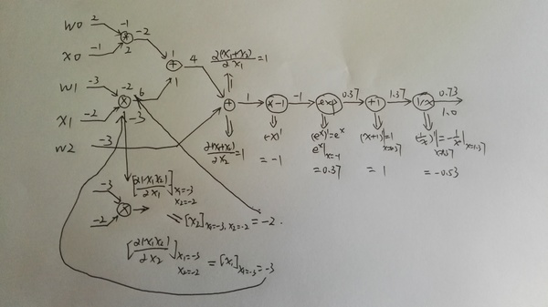
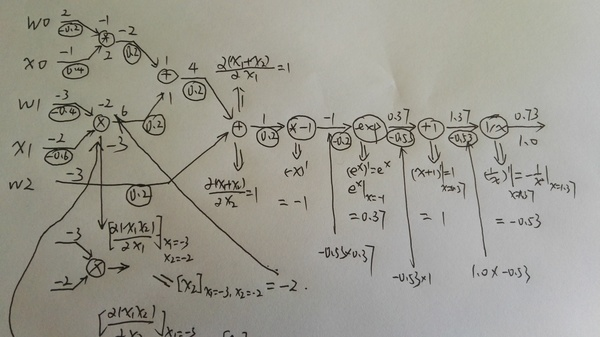
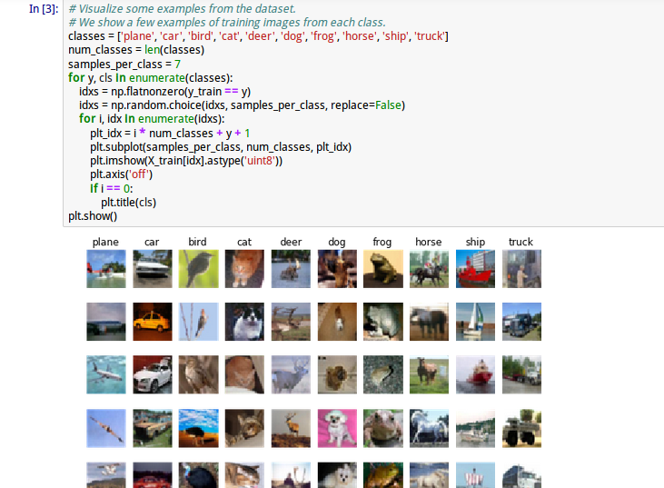
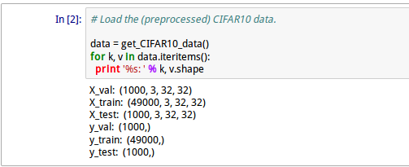
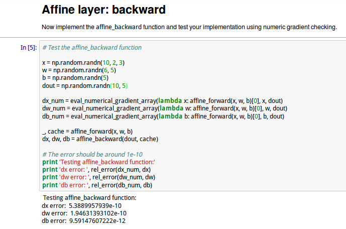
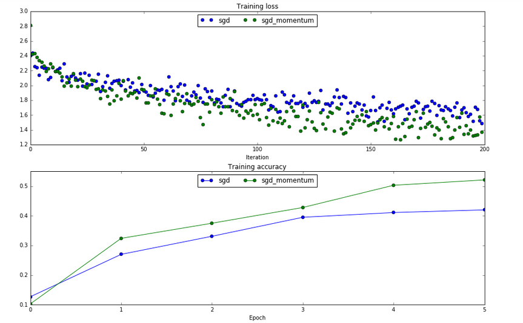

Image Caption Generation(part IV)
前面我们讲过了反向传播算法的详细推导过程，大家可能会觉得有些复杂。事实上其实就是链式求导法则的应用。今天我们将会继续讨论这个问题，不过是从Computational Graphs的角度，也就是我们之前说过的自动求导(Automatic Differentiation or Reverse-mode Differentiation)。并且通过CS231n的Assignment2来学习使用这种方法，通过这种方法来实现一个多层的神经网络。
1. Calculus on Computational Graphs: Backpropagation
首先我们介绍一篇博客文章：
https://colah.github.io/posts/2015-08-Backprop/
基本是翻译过来，不过部分地方是我自己的理解，建议读者结合这篇文章一起阅读。
1.1 简介
反向传播算法是神经网络的核心算法，不过这个算法在不同的领域被多次”发现“过，因此有不同的名称。
1.2 计算图(Computational Graphs)
考虑一个简单的函数
$ e=(a+b)*(b+1) $
。这个函数有两个操作(函数)，加法和乘法。为了指代方便，我们引入两个中间变量，c和d。
$$c=a+b$$
$$d=b+1$$
$$e=c*d$$
下面我们把它画成一个计算图，每一个操作是图中一个节点，最基本的变量a和b也是一个节点。每个节点和它的输入变量直接有一条边。比如d的输入变量是b，那么d和b直接就有一条边。
任何一个显示定义的函数（隐函数不行，不过我们定义的神经网络肯定不会通过隐函数来定义）都可以分解为一个有向无环图（树），其中叶子节点是最基本的无依赖的自变量，而中间节点是我们引入的中间变量，而树根就是我们的函数。比如上面的例子，计算图如下所示：

给定每一个自变量的值，我们可以计算最终的函数值，对应与神经网络就是feedforward计算。具体用”算法“怎么计算呢？首先因为计算图是一个有向无环图，因此我们可以拓扑排序，先是叶子节点a和b，他们的值已经给定，然后删除a和b出发的边，然后c和d没有任何未知依赖，可以计算，最后计算e。计算过程如下图：

1.3 计算图的导数计算
首先我们可以计算每条边上的导数，也就是边的终点对起点的导数，而且导数是在起点的取前向计算值时的导数，具体过程如图所示：

有些边的导数不依赖于输入的值，比如
$ c = a+b$
，
$\frac{\partial}{\partial a}(c) =\frac{\partial}{\partial a}(a+b)=1$
，但是还有很多边的导数是依赖于输入值的。比如
$ e=c*d$
，
$\frac{\partial}{\partial c}(e)= \frac{\partial}{\partial c}(c*d) = d$
因为在“前向”计算的过程中，每个节点的值都计算出来了，所以边的计算很简单，也不需要按照什么的顺序。
不过我们一般比较感兴趣的是最终函数对某个自变量的导数，比如
$\frac{\partial}{\partial b}(e) $
，根据链式法则，只要找到这两个节点的所有路径，然后把路径的边乘起来就得到这条边的值，然后把所有边加起来就可以了。
比如上面的例子b到e有两条路径：b->c->e和b->d->e，所以
$\frac{\partial}{\partial b}(e) = 1*2 + 1*3 = 5 $
。如果用“链式”法则来写就是：
$\frac{\partial}{\partial b}(e) = \frac{\partial e}{\partial c}* \frac{\partial c}{\partial b} + \frac{\partial e}{\partial d}* \frac{\partial d}{\partial b} = 2*1+3*1 $
。路径反过来而已。
使用上面的方法，我们可以计算任何一个点（上面的变量）对另外一个点（上面的变量）的导数。不过我们一般的情况是计算树根对所有叶子的导数，当然我们可以使用上面的算法一个一个计算，但是这样会有很多重复的计算。
比如a->e的路径是 a->c->e，b->e有一条边是b->c->e，其中c->e是重复的【这个例子不太好，我们可以想像c->e是一条很长的路径】，每次都重复计算c->e这个“子”路径是多余的。我们可以从后往前计算，也就是每个节点都是存放树根变量(这个例子是e)对当前节点的导数（其实也就是树根到当前节点的所有路径的和）。
1.4 反向导数计算

计算流程文字描述如下：
首先还是对这个图进行拓扑排序，不过是反过来。
首先是
$\frac{\partial e}{\partial e} = 1$
，这个没什么好说的。
然后计算
$\frac{\partial e}{\partial c} =\frac{\partial e}{\partial e} * \frac{\partial e}{\partial c} = 1 * 2 $
然后计算
$\frac{\partial e}{\partial d} =\frac{\partial e}{\partial e} * \frac{\partial e}{\partial d} = 1 * 3 $
然后计算
$\frac{\partial e}{\partial a} = 2 * 1 $
计算
$\frac{\partial e}{\partial b} = 2 * 1 + 3 *1 $
1.5 前向导数计算
如果我们需要计算每一个变量对某一个变量的导数，就可以使用前向计算的方法。不过我们的神经网络都是相反——计算某个一个变量（一般是损失函数）对所有变量的导数，所以这里就不详细介绍了。
2. optimization
这一部分内容来自：
http://cs231n.github.io/optimization-2/
2.1 简介
我们的目标：x是一个向量，f(x)是一个函数，它的输入是一个向量（或者认为是多变量的函数，这个输入向量就是自变量），输出是一个实数值。我们需要计算的是f对每一个自变量的导数，然后把它们排成一个向量，也就是梯度。
$\nabla f(x)=[\frac{\partial f}{\partial x_1}, \frac{\partial f}{\partial x_2}, ..., \frac{\partial f}{\partial x_n}]^T$
为什么要求这个呢？前面我们也讲了，我们的神经网络的损失函数最终可以看成是权重weights和bias的函数，我们的目标就是调整这些参数，使得损失函数最小。
2.2 简单的表达式和梯度的解释
首先我们看一个很简单的函数
$f(x,y)=xy$
，求f对x和y的偏导数很简单：
$f(x,y) = x y \hspace{0.5in} \rightarrow \hspace{0.5in} \frac{\partial f}{\partial x} = y \hspace{0.5in} \frac{\partial f}{\partial y} = x$
首先来看导数的定义：
$\frac{df(x)}{dx} = \lim_{h\ \to 0} \frac{f(x + h) - f(x)}{h}$
函数在某个点的导数就是函数曲线在这个点的斜率，也就是f(x)随x的变化率。
比如上面的例子，当
$x=4,y=-3$
时
$f(x,y)=-12$
，f对x的偏导数
$\frac{\partial f}{\partial x} = -3$
，也就是说，如果我们固定y=4，然后给x一个很小的变化h，那么f(x,y)的变化大约是-3*h。
因此乘法的梯度就是
$\nabla f = [\frac{\partial f}{\partial x}, \frac{\partial f}{\partial y}] = [y, x]$
同样，加法的梯度更简单：
$f(x,y) = x + y \hspace{0.5in} \rightarrow \hspace{0.5in} \frac{\partial f}{\partial x} = 1 \hspace{0.5in} \frac{\partial f}{\partial y} = 1$
最后一个简单函数是max函数：
$f(x,y) = \max(x, y) \hspace{0.5in} \rightarrow \hspace{0.5in} \frac{\partial f}{\partial x} = \mathbb{1}(x >= y) \hspace{0.5in} \frac{\partial f}{\partial y} = \mathbb{1}(y >= x)$
这个导数是ReLU(x)=max(x,0)的导数，其实也简单，如果
$x>=y$
，那么
$max(x,y)=x$
，则导数是1，否则
$max(x,y)=0$
，那么对x求导就是0。
2.3 复杂表达式的链式法则
接下来看一个稍微复杂一点的函数
$f(x,y,z)=(x+y)z$
。我们引入一个中间变量q，
$f=qz,q=x+y$
，我们可以使用链式法则求f对x和y的导数。
$\frac{\partial f}{\partial x} = \frac{\partial f}{\partial q} \frac{\partial q}{\partial x}$
，对y的求导也是类似的。
下面是用python代码来求f对x和y的导数在某一个点的值。
# 设置自变量的值
x = -2; y = 5; z = -4
# “前向”计算f
q = x + y # q becomes 3
f = q * z # f becomes -12
# 从“后”往前“反向”计算
# 首先是 f = q * z
dfdz = q # 因为df/dz = q, 所以f对z的梯度是 3
dfdq = z # 因为df/dq = z, 所以f对q的梯度是 -4
# 然后 q = x + y
dfdx = 1.0 * dfdq # 因为dq/dx = 1，所以使用链式法则计算dfdx=-4
dfdy = 1.0 * dfdq # 因为dq/dy = 1，所以使用链式法则计算dfdy=-4
我们也可以用计算图来表示和计算：

绿色的值是feed forward的结果，而红色的值是backprop的结果。
不过我觉得cs231n课程的这个图没有上面blog的清晰，原因是虽然它标示出来了最终的梯度，但是没有标示出local gradient，我在下面会画出完整的计算过程。
2.4 反向传播算法的直觉解释
我们如果把计算图的每一个点看成一个“门”（或者一个模块），或者说一个函数。它有一个输入（向量），也有一个输出（标量）。对于一个门来说有两个计算，首先是根据输入，计算输出，这个一般很容易。还有一种计算就是求输出对每一个输入的偏导数，或者说输出对输入向量的”局部“梯度（local gradient)。一个复杂计算图（神经网络）的计算首先就是前向计算，然后反向计算，反向计算公式可能看起来很复杂，但是如果在计算图上其实就是简单的用local gradient乘以从后面传过来的gradient，然后加起来。
2.5 sigmoid模块的例子
接下来我们看一个更复杂的例子：
$$f(w,x) = \frac{1}{1+e^{-(w_0x_0 + w_1x_1 + w_2)}}$$
这个函数是一个比较复杂的复合函数，但是构成它的基本函数是如下4个简单函数：
$$f(x) = \frac{1}{x}
\hspace{1in} \rightarrow \hspace{1in}
\frac{df}{dx} = -1/x^2
\\\\
f_c(x) = c + x
\hspace{1in} \rightarrow \hspace{1in}
\frac{df}{dx} = 1
\\\\
f(x) = e^x
\hspace{1in} \rightarrow \hspace{1in}
\frac{df}{dx} = e^x
\\\\
f_a(x) = ax
\hspace{1in} \rightarrow \hspace{1in}
\frac{df}{dx} = a$$
下面是用计算图画出这个计算过程：

这个图有4种gate，加法，乘法，指数和倒数。加法有加一个常数和两个变量相加，乘法也是一样。
上图绿色的值是前向计算的结果，而红色的值是反向计算的结果，local graident并没有标示出来，所以看起来可能有些跳跃，下面我在纸上详细的分解了其中的步骤，请读者跟着下图自己动手计算一遍。

上图就是前向计算的过程，比较简单。

第二个图是计算local gradient，对于两个输入的乘法和加法，local gradient也是两个值，local gradient的值我是放到图的节点上了。

第三个图是具体计算一个乘法的local gradient的过程，因为上图可能看不清，所以单独放大了这一步。

最后计算真正的梯度，是把local gradient乘以来自上一步的gradient。不过这个例子一个节点只有一个输出，如果有多个的话，梯度是加起来的，可以参考1.4的
$\frac{\partial e}{\partial b}$
上面我们看到把
$f(w,x) = \frac{1}{1+e^{-(w_0x_0 + w_1x_1 + w_2)}}$
分解成最基本的加法，乘法，导数和指数函数，但是我们也可以不分解这么细。之前我们也学习过了sigmoid函数，那么我们可以这样分解：
$$ z = w_0x_0 + w_1x_1 + w_2
\\\\
f=\sigma(z)$$
$\sigma(x)$
的导数我们之前已经推导过一次了，这里再列一下：
$$\sigma(x) = \frac{1}{1+e^{-x}} \\\\
\rightarrow \hspace{0.3in} \frac{d\sigma(x)}{dx} = \frac{e^{-x}}{(1+e^{-x})^2} = \left( \frac{1 + e^{-x} - 1}{1 + e^{-x}} \right) \left( \frac{1}{1+e^{-x}} \right)
= \left( 1 - \sigma(x) \right) \sigma(x)$$
因此我们可以把后面一长串的gate”压缩“成一个gate：

我们来比较一下，之前前向计算
$\sigma(x)$
需要一次乘法，一次exp，一次加法导数；而反向计算需要分别计算这4个gate的导数。
而压缩后前向计算是一样的，但是反向计算可以”利用“前向计算的结果
$ \frac{d\sigma(x)}{dx}=\sigma(x)(1-\sigma(x))$
，这只需要一次减法和一次乘法！当然如果不能利用前向的结果，我们如果需要重新计算
$\sigma(x)$
，那么压缩其实没有什么用处。能压缩的原因在于
$\sigma$
函数导数的特殊形式。而神经网络的关键问题是在训练，训练性能就取决于这些细节。如果是我们自己来实现反向传播算法，我们就需要利用这样的特性。而如果是使用工具，那么就依赖于工具的优化水平了。
下面我们用代码来实现一下：
w = [2,-3,-3] # assume some random weights and data
x = [-1, -2]
# forward pass
dot = w[0]*x[0] + w[1]*x[1] + w[2]
f = 1.0 / (1 + math.exp(-dot)) # sigmoid function
# backward pass through the neuron (backpropagation)
ddot = (1 - f) * f # gradient on dot variable, using the sigmoid gradient derivation
dx = [w[0] * ddot, w[1] * ddot] # backprop into x
dw = [x[0] * ddot, x[1] * ddot, 1.0 * ddot] # backprop into w
# we're done! we have the gradients on the inputs to the circuit
上面的例子用了一个小技巧，就是所谓的staged backpropagation，说白了就是给中间的计算节点起一个名字。比如dot。为了让大家熟悉这种技巧，下面有一个例子。
2.6 Staged computation练习
$$f(x,y) = \frac{x + \sigma(y)}{\sigma(x) + (x+y)^2}$$
我们用代码来计算这个函数对x和y的梯度在某一点的值
前向计算
x = 3 # example values
y = -4
# forward pass
sigy = 1.0 / (1 + math.exp(-y)) # 分子上的sigmoid #(1)
num = x + sigy # 分子 #(2)
sigx = 1.0 / (1 + math.exp(-x)) # 分母上的sigmoid #(3)
xpy = x + y #(4)
xpysqr = xpy**2 #(5)
den = sigx + xpysqr # 分母 #(6)
invden = 1.0 / den #(7)
f = num * invden # done! #(8)
反向计算
# backprop f = num * invden
dnum = invden # gradient on numerator #(8)
dinvden = num #(8)
# backprop invden = 1.0 / den
dden = (-1.0 / (den**2)) * dinvden #(7)
# backprop den = sigx + xpysqr
dsigx = (1) * dden #(6)
dxpysqr = (1) * dden #(6)
# backprop xpysqr = xpy**2
dxpy = (2 * xpy) * dxpysqr #(5)
# backprop xpy = x + y
dx = (1) * dxpy #(4)
dy = (1) * dxpy #(4)
# backprop sigx = 1.0 / (1 + math.exp(-x))
dx += ((1 - sigx) * sigx) * dsigx # Notice += !! See notes below #(3)
# backprop num = x + sigy
dx += (1) * dnum #(2)
dsigy = (1) * dnum #(2)
# backprop sigy = 1.0 / (1 + math.exp(-y))
dy += ((1 - sigy) * sigy) * dsigy #(1)
# done! phew
需要注意的两点：1. 前向的结果都要保存下来，反向的时候要用的。2. 如果某个变量有多个出去的边，第一次是等于，第二次就是+=，因为我们要把不同出去点的梯度加起来。
下面我们来逐行分析反向计算：
(8) f = num * invden
local gradient
$\frac{df}{dnum}=invden$
，而上面传过来的梯度是1，所以
$dnum=1*invden$
。注意变量的命名规则，
$df/dnum$
就命名为dnum【省略了df，因为默认我们是求f对所有变量的偏导数】
同理：
$dinvden = num$
(7) invden = 1.0 / den
local gradient是
$(-1.0 / (den**2))$
，然后乘以上面来的dinvden
(6) den = sigx + xpysqr
这个函数有两个变量sigx和xpysqr，所以需要计算两个local梯度，然后乘以dden
加法的local梯度是1，所以就是(1)*dden
(5) xpysqr = xpy**2
local gradient是2*xpy，再乘以dxpysqr
(4) xpy = x + y
还是一个加法，local gradient是1，所以dx和dy都是dxpy乘1
(3) sigx = 1.0 / (1 + math.exp(-x))
这是sigmoid函数，local gradient是 (1-sigx)*sigx，再乘以dsigx。
不过需要注意的是这是dx的第二次出现，所以是+=，表示来自不同路径反向传播过来给x的梯度值
(2) num = x + sigy
还是个很简单的加法，local gradient是1。需要注意的是dx是+=，理由同上。
(1) sigy = 1.0 / (1 + math.exp(-y))
最后是sigmoid(y)和前面(3)一样的。
请仔细阅读上面反向计算的每一步代码，确保自己理解了之后再往下阅读。
2.7 梯度的矩阵运算
前面都是对一个标量的计算，在实际实现时用矩阵运算一次计算一层的所有梯度会更加高效。因为矩阵乘以向量和向量乘以向量都可以看出矩阵乘以矩阵的特殊形式，所以下面我们介绍矩阵乘法怎么求梯度。
首先我们得定义什么叫矩阵对矩阵的梯度！
我查阅了很多资料，也没找到哪里有矩阵对矩阵的梯度的定义，如果哪位读者知道，请告诉我，谢谢！唯一比较接近的是Andrew Ng的课程cs294的背景知识介绍的slides linalg的4.1节定义了gradient of Matrix，关于矩阵对矩阵的梯度我会有一个猜测性的解释，可能会有问题。
首先介绍graident of matrix
假设
$f:\mathbb{R}^{m \times n} \rightarrow \mathbb{R}$
是一个函数，输入是一个
$m \times n$
的实数值矩阵，输出是一个实数。那么f对A的梯度是如下定义的：
$$\nabla_A f(A) =\left[ \begin{matrix} \frac{\partial f(A)}{\partial A_{11}} & \frac{\partial f(A)}{\partial A_{12}} & \cdots & \frac{\partial f(A)}{\partial A_{1n}}
\\ \frac{\partial f(A)}{\partial A_{21}} & \frac{\partial f(A)}{\partial A_{22}} & \cdots & \frac{\partial f(A)}{\partial A_{2n}}
\\ \vdots & \vdots & \ddots & \vdots
\\ \frac{\partial f(A)}{\partial A_{m1}} & \frac{\partial f(A)}{\partial A_{m2}} & \cdots & \frac{\partial f(A)}{\partial A_{mn}}
\end{matrix} \right]$$
看起来定义很复杂？其实很简单，我们把f看成一个m
n个自变量的函数，因此我们可以求f对这m
n个自变量的偏导数，然后把它们排列成m*n的矩阵就行了。为什么要多此一举把变量拍成矩阵把他们的偏导数也排成矩阵？想想我们之前的神经网络的weights矩阵，这是很自然的定义，同时我们需要计算loss对weights矩阵的每一个变量的偏导数，写出这样的形式计算起来比较方便。
那么什么是矩阵对矩阵的梯度呢？我们先看实际神经网络的一个计算情况。对于全连接的神经网络，我们有一个矩阵乘以向量
$D=Wx$
【我们这里把向量x看成矩阵】。现在我们需要计算loss对某一个
$W_{ij}$
的偏导数，根据我们之前的计算图，
$W_{ij}$
有多少条出边，那么就有多少个要累加的梯度乘以local梯度。
假设W是
$m \times n$
的矩阵，x是
$n\times p$
的矩阵，则D是
$m \times p$
的矩阵
$$ \frac {\partial Loss}{\partial W_{ij}} = \sum_{k=1}^{m} \sum_{l=1}^{p} \frac {\partial D_{kl}}{\partial W_{ij}} \frac{\partial Loss}{\partial D_{kl}} $$
根据矩阵乘法的定义
$D_{kl}=\sum_{s=1}^{n}W_{ks}x_{sl}$
，我们可以计算：
$$\begin{eqnarray} \frac {\partial D_{kl}}{\partial W_{ij}} =
\begin{cases}
0, &k \neq i \cr x_{jl}, & k=i \end{cases}
\end{eqnarray}$$
请仔细理解上面这一步，如果
$k \ne i$
，则不论s是什么，
$W_{ks}$
跟
$W_{ij}$
不是同一个变量，所以导数就是0；如果
$k=i$
，
$\sum_s{W_{is}}x_{sl}=x_{jl}$
，也就求和的下标s取j的时候有
$W_{ij}$
。
因此
$$ \frac {\partial Loss}{\partial W_{ij}} = \sum_{k=1}^{m} \sum_{l=1}^{p} \frac {\partial D_{kl}}{\partial W_{ij}} \frac{\partial Loss}{\partial D_{kl}} (下标k必须等于i，否则是0)
\\\\
=\sum_{l=1}^{p} \frac{\partial D_{il}}{\partial W_{ij}} \frac{\partial Loss}{\partial D_{il}}
\\\\
=\sum_{l=1}^{p} x_{jl} \frac{\partial Loss}{\partial D_{il}} 【代入上式】$$
上面计算了loss对一个
$W_{ij}$
的偏导数，如果把它写成矩阵形式就是：
$$\frac{\partial Loss}{\partial W}$$
前面我们推导出了对
$W_{ij}$
的偏导数的计算公式，下面我们把它写成矩阵乘法的形式并验证【证明】它。
$$\frac{\partial Loss}{\partial W}=\frac{\partial Loss}{\partial D} x^T$$
为什么可以写成这样的形式呢？
$$
(\frac{\partial Loss}{\partial D} x^T)_{ij} 【前者是m*p，后者是p*n】
\\\\
=\sum_{l=1}^{p} (\frac{\partial Loss}{\partial D} )_{il} (x^T)_{lj}
\\\\
=\sum_{l=1}^{p} (\frac{\partial Loss}{\partial D})_{il} (x)_{jl}
\\\\
=\sum_{l=1}^{p} \frac{\partial Loss}{\partial D_{il}} (x)_{jl}
$$
上面的推导似乎很复杂，但是我们只要能记住就行，记法也很简单——把矩阵都变成最特殊的1
1的矩阵（也就是标量，一个实数）。D=w
x，这个导数很容易吧，对w求导就是local gradient x，然后乘以得到dW=dD
x；同理dx=dD
W。
但是等等，刚才那个公式里还有矩阵的转置，这个怎么记？这里有一个小技巧，就是矩阵乘法的条件，两个矩阵能相乘他们的大小必须匹配，比如D=Wx，W是m
n，x是n
p，也就是第二个矩阵的行数等于第一个的列数。
现在我们已经知道dW是dD”乘以“x了，dW的大小和W一样是m
n，而dD和D一样是m
p，而x是n
p，那么为了得到一个m
n的矩阵，唯一的办法就是
$dD*x^T$
同理dx是n
p，dD是m
p，W是m*n，唯一的乘法就是
$W^T*dD$
下面是用python代码来演示，numpy的dot就是矩阵乘法，可以用numpy.dot(A,B)，也可以直接调用ndarray的dot函数——A.dot(B)：
# forward pass
W = np.random.randn(5, 10)
X = np.random.randn(10, 3)
D = W.dot(X)
# now suppose we had the gradient on D from above in the circuit
dD = np.random.randn(*D.shape) # same shape as D
dW = dD.dot(X.T) #.T gives the transpose of the matrix
dX = W.T.dot(dD)
3. 常见深度学习框架/工具用的方法
前面我们介绍了4种梯度的计算方法：手工计算，数值计算，符号求导和自动求导。作为一个框架或者工具，显然不能用手工计算，数值计算效率太低，一般只能用来做gradient check。剩下的两种就是符号求导和自动求导了。目前的框架都是用的自动求导【注：theano说自己是Symbolic
Differentiationhttp://deeplearning.net
/software/theano/library/gradient.html ，但含义并不是数学上的Symbolic
Diff，感兴趣的读者可以参考：https://groups.google.com
/forum/#!topic/theano-users/mln5g2IuBSU】
再细分一下，深度学习框架可以分成两类：用户可以用户基本函数（也有叫操作op的）来定义计算图的；用户只能用更上层的函数。但是这两者的界限其实很模糊。哪些函数算基本的哪些算上层的？到底要提供多少函数才能表示所有的神经网络？
这些其实是很难界定的，但是大部分框架都提供了扩展能力，比如tensorflow可以自定义op，如果一个函数没有，你可以实现，同样的theano也可以自定义。而另外一些框架或者工具可能就没有那么灵活。但他们本质都是类似的——我们通过某种方式【代码或者配置文件】定义一个计算图，并且定义那些是变量【可训练的】，那些是常量【或者批量给定的值如tensorflow里的placeholder】，以及损失函数，它就能自动的帮我们计算损失函数对每个可训练参数的导数，而且大部分框架把梯度下降的常用方法都封装好了，我们只有指定一些参数，比如batch大小，learning rate等等。当然有一下框架如theano并不做这些，它只帮助我们求梯度，这样的工具更”底层“一些，当然对i使用者要求更高一些，也会更灵活一些，适合对细节感兴趣的用户和那些需要自己”创造“神经网络结构的用户——很多学术界的人很喜欢theano，而像caffe，torch，keras等就是更”上层“的工具，使用它我只要定义一个一个CNN或者DNN的层就行，这个层有多少hidden unit，激活函数用什么，是否dropout，用什么loss function，然后其余的事情就不要管了。
4. 使用自动求导来实现多层神经网络
其实就是完成CS231n的Assignment2的部分内容。
4.1 环境
请仔细阅读http://cs231n.github.io/assignments2016/assignment2/ 安装需要的软件。我这里根据我的环境(Ubuntu 14.04 LTS)列举一些安装的命令
1. 下载和解压
http://vision.stanford.edu/teaching/cs231n/winter1516_assignment2.zip
2. 安装virtualenv和依赖
cd assignment2
sudo pip install virtualenv # This may already be installed
virtualenv .env # Create a virtual environment
source .env/bin/activate # Activate the virtual environment
pip install -r requirements.txt # Install dependencies
# Work on the assignment for a while ...
deactivate # Exit the virtual environment
virtualenv可以理解为一个虚拟的python环境，和系统的环境可以隔离开，而且安装程序也不需要root权限。用的时候记得source .env/bin/active！
3. 下载数据
cd cs231n/datasets
./get_datasets.sh
4. 编译cython扩展
python setup.py build_ext --inplace
5. 启动ipython notebook
(.env) lili@lili-desktop:~/cs231n/assignment2$ ipython notebook
应该会弹出浏览器打开
http://localhost:8888/tree，打FullyConnectedNets.ipynb
如果没有用过ipython notebook，请先阅读
http://cs231n.github.io/ipython-tutorial/。确保了解基本的操作，知道怎么执行cell等基本概念后再往下阅读。
4.2 作业讲解
我们的这个作业就是要实现一个全连接的神经网络，网络的层数是可以自己定义的。我们把神经网络分解成一些基本的Layer【注意：这里的Layer不是我们之前说的一层，之前说的一个Layer是全连接的网络，而这里的Layer可以认为是一个Gate，或者一个函数一个Op】，每一个Layer我们都能进行feedforward和backward计算，然后我们通过这些基本的Layer组成一个复杂的神经网络，进行这个网络的整体feedforward和backprop计算，然后训练参数和进行预测。
因此我们实现的很多Layer的结构如下：
def layer_forward(x, w):
""" Receive inputs x and weights w """
# Do some computations ...
z = # ... some intermediate value
# Do some more computations ...
out = # the output
cache = (x, w, z, out) # Values we need to compute gradients
return out, cache
我们会进行forward的计算，然后把输入，输出还有一些中间结果都保存下来，放到cache里【backward时要用到的】，然后返回输出和cache
def layer_backward(dout, cache):
"""
Receive derivative of loss with respect to outputs and cache,
and compute derivative with respect to inputs.
"""
# Unpack cache values
x, w, z, out = cache
# Use values in cache to compute derivatives
dx = # Derivative of loss with respect to x
dw = # Derivative of loss with respect to w
return dx, dw
而backward的计算，我们能拿到cache和dout【从后面的layer传过来的gradient】
一上来我们会从cache里读取出输入，输出和中间值。然后就计算对每个变量的local gradient，然后乘以后层传过来的dout，得到最终的dLoss/dw。然后返回。
4.2.1 cell-1
鼠标点击这个cell，然后选择cell菜单，选择运行，如果没有任何输出，恭喜你，环境没有问题，如果发现有import之类的错误，那就是之前的环境和依赖没有安装好，请根据错误信息google解决。
这个cell是导入一些依赖，然后定义了一个rel_error函数：
def rel_error(x, y):
""" returns relative error """
return np.max(np.abs(x - y) / (np.maximum(1e-8, np.abs(x) + np.abs(y))))
这个函数计算两个ndarray【两个数或者两个向量或者两个矩阵】的相对误差，主要会用来做gradient check，也就是用numerical gradient和我们计算的gradient比较，如果相对误差比较小，那么就说明我们的gradient可能是正确的【如果误差较大肯定不对，但是误差小不见得一定对，就像我们的单元测试，通过了单元测试不见得就没bug，但是没通过肯定有bug】
计算方法也很简单，计算x-y的绝对值，然后除以它们绝对值的和。当然计算机精度的问题，分母可能为0，所以用一个max函数，如果小于10的-8次方就取10的-8次方，否则就是x的绝对值加y的绝对值。【数值计算的时候一定要考虑溢出，包括下溢为0和上溢为无穷大】
4.2.2 cell-2
这个cell加载cifar-10的数据，如果想了解这个数据的格式，请参考作业1的CNN.pynb的前几个cell
说明：作业1的地址在
http://cs231n.github.io/assignments2016/assignment1/
安装方法和作业2是一样的，不过在pip install -r requirements.txt时可能会提升pillow-3.0已经存在了，打开requirements.txt，里面有两个pillow的版本，删除一个就行了。
下面是我运行作业1的前几个cell的结果，你有可以自己也试一试，有空最好把作业1自己做一做。

下面是我运行这个cell的结果：

cifar10的数据10类图片，’plane’, ‘car’, ‘bird’, ‘cat’, ‘deer’, ‘dog’, ‘frog’, ‘horse’, ‘ship’, ‘truck。总共有6万张标注的数据，其中50000张训练数据，10000张测试数据。而在这里，我们把50000张中的49000用来真正训练，1000张用来validate
4.2.3 cell-3
接下来我们打开cs231n/layers.py这个文件，实现其中的affine_forward函数。
首先看一下没有写任何代码时课程已经提供的一些代码：
def affine_forward(x, w, b):
"""
Computes the forward pass for an affine (fully-connected) layer.
The input x has shape (N, d_1, ..., d_k) and contains a minibatch of N
examples, where each example x[i] has shape (d_1, ..., d_k). We will
reshape each input into a vector of dimension D = d_1 * ... * d_k, and
then transform it to an output vector of dimension M.
Inputs:
- x: A numpy array containing input data, of shape (N, d_1, ..., d_k)
- w: A numpy array of weights, of shape (D, M)
- b: A numpy array of biases, of shape (M,)
Returns a tuple of:
- out: output, of shape (N, M)
- cache: (x, w, b)
"""
out = None
#############################################################################
# TODO: Implement the affine forward pass. Store the result in out. You #
# will need to reshape the input into rows. #
#############################################################################
pass
#############################################################################
# END OF YOUR CODE #
#############################################################################
cache = (x, w, b)
return out, cache
函数下面的注释需要仔细阅读一遍。
这个函数计算affine (全连接)层的forward pass
仿射变换
(Affine
transformation)看起来很数学，其实我们只有知道它是一个简单的线性变化就行了。如果想了解细节，可以参考wiki：https://en.wikipedia.org
/wiki/Affine_transformation
如果变成特殊的一维的情况，y=Ax+b就是仿射变换，多维的情况就是把A变成矩阵，b变成向量就行了。
【注：这里的全连接，指的是仿射变换，不保护非线性激活的情况，有的文献可能把包含了激活的一个层叫作全连接层】
输入参数x
x是numpy的ndarray，维度是
$(N, d_1, ..., d_k)$
。N是batch大小，为了提高计算效率，我们一般同时计算一个batch的forward和backward pass。剩下的维度为什么是变长的呢？其实是为了方便。因为CNN的filter的大小是不固定的。不过我们可以简单的把这个多维的tensor展开成一个一维的向量，因为全连接的层是不会考虑不同输入的空间位置的【而CNN是考虑空间关系的，所以在图像处理中效果更好，后面我们在介绍CNN时会详细介绍】。我们把展开后的向量的维度记为D，
$D = d_1 * ... * d_k$
输入参数w
w是numpy的ndarray，维度是(D, M)，这个很容易理解，对于全连接的层，输入神经元是D，输出神经元是M，参数w就是(D,M)的矩阵。【说明，如果读者还记得前面的代码，我们之前是反过来的，w是M*D的矩阵。其实不论怎么记都不影响，只是一种习惯而已，不过计算的时候有的要转置，有的不需要。我们只要记住一点，满足矩阵的乘法条件就行了！】
输入参数b
b是numpy的ndarray，维度是(M,)，它是一个M维的向量，是bias。
输出 out
输出out是ndarray，维度是 (N, M)
输出cache
cache保存这一层的输入和中间变量，这里cache = (x, w, b)，cache是一个tuple，保存了x,w,b，在backward的阶段会用到。
实现函数 affine_forward
介绍完了函数的输入和输出，我们就需要实现这个函数，课程的代码告诉我们在指定的地方（pass那个地方）实现out的计算就行了。
前面我们也说过了，affine函数就是out=Wx+b，需要主要的是矩阵乘法的维度。首先我们需要把x从一个高维的tensor变成2维的matrix。
N = x.shape[0]
x_temp = x.reshape(N,-1)
这里要用到ndarray的reshape函数，具体文档可以上网查，也可以直接在python里看。在python里看比较方便，可以先启动ipython，然后导入numpy，然后用?查看：
$ ipython
import numpy as np
np.reshape?
我们可以自己写代码计算
$D = d_1 * ... * d_k$
，不过numpy的reshape有一个简便的方法就是设置某一个维度是-1，让numpy来推测。因为我们知道第一维是N，剩下的维度展开成一个一维的向量，所以我们设置为-1。
当然我们也可以完全自己来计算D，请同学们修改代码自己计算D【可能很多同学第一个想到的方法是for循环，但是在numpy或者类似的工具如matlab里尽量避免用for循环，因为使用一些函数，numpy会优化代码】
接下来就是out=Wx+b了。
输出out是N
M，W是D
M，x_temp是N
D，那么唯一合法的乘法就是x_temp
W了。所以out的计算如下
out = x_temp.dot(w) + b
稍等一下！b是M维的向量，x_temp.dot(W)是N*M，这两个ndarray怎么相加呢？这里用到的技巧就是numpy的broadcast。如果还不理解，请阅读
http://cs231n.github.io/python-numpy-tutorial/#numpy-broadcasting
如果不计算一个batch只计算一个，那么N就是1，那么就可以相加，现在我们一次计算了N个训练数据的W
x，那么b却是一样的（N次计算W和b是不变的），如果我们不用broadcast的技巧，那么需要复制b成为N
M的矩阵，这会浪费空间。
这样我们就完成了一个函数，是否很简单呢？
写完这个函数后怎么知道我们写的没问题呢？CS231N的课程非常好的一点就是每一个步骤都会有检验的代码。我们写完这个函数之后就可以运行这个cell测试一下：

cell的注释里写了，如果相对错误了小于10的-9次方，那么说明代码是没有问题的【至少是通过单元测试了】。恭喜！你正确的完成了第一个函数！
4.2.4 cell-4
第二个要实现的是affine_backward函数，也就是反向计算梯度。
输入dout
从上层（后面）传过来的dLoss/dout，维度是和out一样的，(N, M)
输入cache
我们保存的cache，它是个tuple，具体为：
x: 输入 维度是
$ (N, d_1, ... d_k)$
w: 权重矩阵，维度是 (D, M)
b: bias，维度是(M,)
输出
输出返回一个tuple:
dx: dLoss/dx, 维度是
$ (N, d1, ..., d_k)$
dw: dLoss/dw, (D, M)
db: dLoss/db (M,)
x, w, b = cache
dx, dw, db = None, None, None
#############################################################################
# TODO: Implement the affine backward pass. #
#############################################################################
db = np.sum(dout, axis = 0)
x_temp = x.reshape(x.shape[0],-1)
dw = x_temp.T.dot(dout)
dx = dout.dot(w.T).reshape(x.shape)
#############################################################################
# END OF YOUR CODE #
#############################################################################
return dx, dw, db
代码我已经放上去了，下面来分析为什么。
首先我们计算dw和dx。
根据链式法则：
$\frac {dLoss}{dw} = \frac {dLoss}{dout} \frac {dout}{dw}$
dout是(N,M)，x_temp是(N,D)，而dw是(D,M)所以唯一合法的乘法就是：
$x\_temp^T * dout=(D,M)$
。所以代码为：
dw = x_temp.T.dot(dout)
同理可以求dx，稍微不同的就是计算出来的是展开的dx，需要再reshape成和x一样的维度的tensor：
dx = dout.dot(w.T).reshape(x.shape)
最后是db，如果batch等于1，那么很简单db=dout，但现在dout是N个训练样本的梯度，所以需要加起来。具体用到的是np.sum函数【当然也可以写个for循环，但是这会比较低效而且代码看起来很罗嗦】， db = np.sum(dout, axis = 0)
In [10]: dout=np.array([[1,2,3],[4,5,6]])
In [11]: dout
Out[11]:
array([[1, 2, 3],
[4, 5, 6]])
In [12]: dout.sum(axis=0)
Out[12]: array([5, 7, 9])
上面是sum函数的一个例子，请大家理解了db的求法。
实现了之后我们再来测试一下cell-4，课程代码已经帮我们写好单元测试了，我们只需要允许cell-4就行了。
另外值得注意的是这个cell里用到了eval_numerical_gradient_array函数，在cs231n/gradient_check.py下，另外这个文件下还有个eval_numerical_gradient，都是用来计算数值梯度和我们求出的梯度的误差的，有兴趣的读者可以仔细阅读这个代码。

4.2.5 cell-5
这个cell实现ReLU的forward pass
代码只有一行
out = np.maximum(0, x)
注意numpy的maximum函数和max函数，前者有两个参数，求其中较大的那个，也就是数学上的max(x,y)函数，而numpy的max函数用于在一个ndarray中求较大的数【当然也可能求某个维度较大的值】
4.2.6 cell-6
这个cell实现ReLU的backward pass
也只有一行代码：
dx = (x >= 0) * dout
怎么来的呢？还记得前面max(x,y)的偏导数吗？
$f(x,y) = \max(x, y) \hspace{0.5in} \rightarrow \hspace{0.5in} \frac{\partial f}{\partial x} = \mathbb{1}(x >= y) \hspace{0.5in} \frac{\partial f}{\partial y} = \mathbb{1}(y >= x)$
把y设置成0，则
$\frac{\partial f}{\partial x} = \mathbb{1}(x >= 0) $
x>=0返回什么呢？我们测试一下：
In [15]: x=np.array([1,-1])
In [16]: x>=0
Out[16]: array([ True, False], dtype=bool)
返回的是一个bool数组，那bool数组乘以一个double数组呢？
In [15]: x=np.array([1,-1])
In [16]: x>=0
Out[16]: array([ True, False], dtype=bool)
In [17]: y=np.array([2.0,3.0])
In [18]: (x>=0)*y
Out[18]: array([ 2., 0.])
可以看到true会类型转换成1,false转换成0
所以numpy的
$x>=0$
其实就是数学上的indicator函数
$\mathbb{1}_{(x >= 0)}$
4.2.7 cell-7
这个cell要实现的是affine_relu_forward和affine_relu_backward【其实已经实现了，我们看一下代码就行了】，因为神经网络的一次同时需要affine_layer和relu_layer，把它们”拼“在一起用起来更方便。
具体代码在 cs231n/layer_utils.py
def affine_relu_forward(x, w, b):
"""
Convenience layer that perorms an affine transform followed by a ReLU
Inputs:
- x: Input to the affine layer
- w, b: Weights for the affine layer
Returns a tuple of:
- out: Output from the ReLU
- cache: Object to give to the backward pass
"""
a, fc_cache = affine_forward(x, w, b)
out, relu_cache = relu_forward(a)
cache = (fc_cache, relu_cache)
return out, cache
def affine_relu_backward(dout, cache):
"""
Backward pass for the affine-relu convenience layer
"""
fc_cache, relu_cache = cache
da = relu_backward(dout, relu_cache)
dx, dw, db = affine_backward(da, fc_cache)
return dx, dw, db
4.2.8 cell-8
svm-loss和softmax-loss
课程代码已经给出了，因为这个函数本来应该是在第一个作业来完成的。因为我们跳过了作业1，所以还是需要理解其中的代码，svm loss我们就不仔细介绍了，感兴趣的同学参考
http://cs231n.github.io/linear-classify/#svm
这里我们来简单的讲一下softmax loss，因为这个loss在神经网络中非常常见。详细的介绍请阅读
http://cs231n.github.io/linear-classify/#softmax
首先需要澄清一个概念，并没有一个loss function叫softmax loss。它指的是在输出层加一个softmax函数，然后用cross entropy的损失函数。
softmax函数
简单的说，softmax函数把一个向量变成另外一个向量，这个新的向量每一个元素都大于0【根据后面的条件小于1】，并且加起来等于1。还有一个条件就是”单调“的映射，也就是两个数的顺序在映射之后还能够保持。
如果只看上面的描述，你会怎么实现softmax函数呢？首先要把它们变成大于0的数，这当然有很多方法，指数函数是最容易想到的。首先是
$e^x>0$
。另外就是如果
$x_1>x_2$
，那么
$e^{x_1}>e^{x_2}$
那怎么让它们加起来等于1呢？也很简单，除以它们的和就行了。因此我们就得到了softmax函数：
$$softmax([x_1, x_2, .., x_K]^T)=[\frac {exp(x_1)} {\sum_{i=1}^{K} exp(x_i)}, \frac {exp(x_2)} {\sum_{i=1}^{K} exp(x_i)}, ..., \frac {exp(x_K)} {\sum_{i=1}^{K} exp(x_i)}]^T$$
因为这个向量的每个元素都大于0小于1而且加起来等于1，如果我们把这个输出当成一个K类分类器的输出的话，我们可以把它当成分类器的”概率“。
cross entropy 损失函数
而实际的分类结果应该是1,2,…,K中的一个，我们可以用one-hot的方式来表示，比如分类的结果是2，我们可以表示成[0, 1, 0, …, 0]的形式。
那么我们可以用cross-entroy来计算真实的概率p=[0,1,0…0]和模型输出的概率q的”距离“，具体细节参考
https://en.wikipedia.org/wiki/Cross_entropy
$$ H(p,q)=-\sum_{x}p(x)logq(x)$$
距离越小说明损失
因为p只有一个是1，其余的是0，所以只要下标为1的-logq就行了。
举个例子：假设K=5，假设真实的分类是2，分类器的输出是[0.1, 0.7, 0.1, 0.1, 0]，那么损失应该就是 -log0.7。如果分类器的输出是[0.3, 0.7, 0, 0, 0]，那么损失还是-log0.7，可以看出，它之关注真实分类的值，这是很合理的一个loss。如果分类器在第二个元素越大，那么分类器分成第二类的概率就越大，所以log值也越大【最大是log1=0，没有损失】，-log就越小，损失也越小！
softmax loss的代码
def softmax_loss(x, y):
"""
Computes the loss and gradient for softmax classification.
Inputs:
- x: Input data, of shape (N, C) where x[i, j] is the score for the jth class
for the ith input.
- y: Vector of labels, of shape (N,) where y[i] is the label for x[i] and
0 <= y[i] < C
Returns a tuple of:
- loss: Scalar giving the loss
- dx: Gradient of the loss with respect to x
"""
probs = np.exp(x - np.max(x, axis=1, keepdims=True))
probs /= np.sum(probs, axis=1, keepdims=True)
N = x.shape[0]
loss = -np.sum(np.log(probs[np.arange(N), y])) / N
dx = probs.copy()
dx[np.arange(N), y] -= 1
dx /= N
return loss, dx
首先是函数的输入参数：
x是输入数据(N,C)，N是batch大小，C是分类的类别数。
y是标签，维度是(N,)，y[i]的取值范围是[0,C)，表示正确的分类。
输出：
loss，标量的loss
dx，dLoss/dx
这个函数看起来只有很简单几行代码，但是其实的内容非常丰富。让我们来逐行讲解代码：
第1行
probs = np.exp(x - np.max(x, axis=1, keepdims=True))
$$softmax([x_1, x_2, .., x_K]^T)=[\frac {exp(x_1)} {\sum_{i=1}^{K} exp(x_i)}, \frac {exp(x_2)} {\sum_{i=1}^{K} exp(x_i)}, ..., \frac {exp(x_K)} {\sum_{i=1}^{K} exp(x_i)}]^T$$
如果直接计算，就是上面的公式，但是在实际的数值运算时可能会溢出。
比如输入x=[1000000, 1000000]，则exp(1000000)会溢出，那怎么办呢？
我们看一个例子：x=[1,2,3]，x=[101,102,103]，我们分别计算
$$[\frac{exp(1)}{exp(1)+exp(2)+exp(3)}, \frac{exp(2)}{exp(1)+exp(2)+exp(3)}, \frac{exp(3)}{exp(1)+exp(2)+exp(3)}]$$
$$[\frac{exp(101)}{exp(101)+exp(102)+exp(103)}, \frac{exp(102)}{exp(101)+exp(102)+exp(103)}, \frac{exp(103)}{exp(101)+exp(102)+exp(103)}]$$
我们把下面这个式子的分子分母同时除以exp(100)，那么结果应该是不变的，我们会发现这两个值是一样的！
因此softmax函数的一个特点是它之取决于输入向量的”相对“大小。为了防止溢出，我们可以减去最大的那个数，然后在算exp。前面讲过np.max和np.maximum的区别，np.max是在x中找最大的数，但是因为我们一次处理一个batch(N)，所以我们需要从axis=1这个维度找最大值。下面是max的例子，请仔细理解：
In [21]: x=np.array([[1,3,5],[2,1,1]])
In [22]: np.max(x)
Out[22]: 5
In [23]: np.max(x, axis=1)
Out[23]: array([5, 2])
In [24]: np.max(x, axis=1, keepdims=True)
Out[24]:
array([[5],
[2]])
In [25]: np.max(x, axis=1).shape
Out[25]: (2,)
In [26]: np.max(x, axis=1, keepdims=True).shape
Out[26]: (2, 1)
注意keepdims的作用，因为对一个向量求最大，就会变成一个标量，维度减少了1,同样对一个矩阵的某一维求max，也会变成一个向量。keepdims的意思是保留维度。x是(N,C)维的，而np.max(x,axis=1,keepdims=True)得到(N,1)的，所以x-np.max(x,axis=1,keepdims=True)可以相减【根据broadcast规则】，如果keepdims=False，则(N,C)是不能减(N,)维的向量的。
最后再用np.exp求这个(N,C)矩阵的没一个元素的exp值（universal function）。
第2行
probs /= np.sum(probs, axis=1, keepdims=True)
进行归一化，使用了np.sum函数，和max类似，也有keepdims的问题。
第3，4行
N = x.shape[0]
loss = -np.sum(np.log(probs[np.arange(N), y])) / N
首先需要理解probs[np.arange(N), y]
In [39]: x=np.array([[1,3,5],[2,1,1]])
In [40]: probs = np.exp(x - np.max(x, axis=1, keepdims=True))
In [41]: probs /= np.sum(probs, axis=1, keepdims=True)
In [42]: N = x.shape[0]
In [43]: y=np.array([1,0])
In [44]: probs[np.arange(N), y]
Out[44]: array([ 0.11731043, 0.57611688])
前面我们说过了，我们需要计算”真实“分类对应的下标的log值。”真实“的分类下标就是y，比如上面的例子中x是两个训练数据，y是对应的正确分类下标值1和0。那么我们需要求第0行的第1列和第1行的第0列，求它们的-log，然后加起来。我们可以写for循环来做。但是在numpy里，ndarray提供了方便的方法来slice数组的一部分，np.arange和python标准的range类似，不过得到的是ndarray，得到(0，1,…,N-1)这个N个数，然后probs[np.arange(N), y]分别用这两个一维数组来slice得到一个一维的数组，相当于[probs[0,1], probs[1,0]]
接下来就是用log函数对这个数组的每一个求log，然后除以N就得到平均的loss。
请仔细理解这行代码。如果对ndarray的slice不熟，请参考http://cs231n.github.io/python-numpy-tutorial/#numpy-array-indexing
接下来是计算dLoss/dx，这个公式有些复杂，下面我先来详细推导一下，读者如果有时间的话请自己一步一步的推导。为了公式简单，我们用变量p替代了代码里的probs
$$p_j=\frac{e^{x_j}}{\sum_ke^{x_k}}
\\\\
L=-\sum_{k} y_k log p_k
$$
首先我们来求
$\frac{\partial p_j}{\partial x_i}$
我们分为两种情况，第一种情况是
$i=j$
。
首先回忆一下
$d\frac{u}{v}=\frac{du*v-dv*u}{v^2}$
$$\frac{\partial p_i}{\partial x_i}=\frac{\frac{\partial e^{x_i}}{\partial x_i} \sum_ke^{x_k} - e^{x_i} \frac{\partial (\sum_ke^{x_k})}{\partial x_i} } {(\sum_ke^{x_k})^2}
= \frac{e^{x_i} \sum_ke^{x_k} - e^{x_i} e^{x_i} } {(\sum_ke^{x_k})^2}
\\\\
= \frac{e^{x_i}}{\sum_ke^{x_k}} - (\frac{e^{x_i}}{\sum_ke^{x_k}})^2=p_i - {p_i}^2
$$
第二种情况是
$i \ne j$
。
$$\frac{\partial p_j}{\partial x_i}=\frac{\frac{\partial e^{x_j}}{\partial x_i} \sum_ke^{x_k} - e^{x_j} \frac{\partial (\sum_ke^{x_k})}{\partial x_i} } {(\sum_ke^{x_k})^2}
\\\\
= 0 - (\frac{e^{x_i}}{\sum_ke^{x_k}})^2= - p_ip_j
$$
接下来我们来求
$\frac{\partial L}{\partial x_i}$
$$\frac{\partial L}{\partial x_i}=-\sum_k y_k \frac{\partial logp_k}{\partial x_i}=-\sum_k y_k \frac {1}{p_k} \frac{\partial p_k}{\partial x_i}
$$
对于求和下标k分为两种情况：
$k=i和k \ne i$
，分别代入上面的公式得到：
$$=-y_i(1-p_i) - \sum_{k \ne i} y_k \frac{1}{p_k}(-p_ip_k)
\\\\
=-y_i(1-p_i) + \sum_{k \ne i} y_kp_i
=-y_i + y_ip_i + \sum_{k \ne i} y_kp_i
=\sum_ky_kp_i - y_i
=p_i-y_i
$$
最后一步用到的是
$\sum_kp_k=1$
。
推导有些复杂，记忆起来其实不复杂，softmax+cross entropy的梯度就是模型预测的结果p减去lable y。
下面我们来看代码怎么实现！
dx = probs.copy()
dx[np.arange(N), y] -= 1
dx /= N
我们需要实现probs - y，不过公式里的y是one-hot表示的向量，而我们这里的y是下标【如果不考虑batch N】。所以这里先从probs里复制一份给新的变量dx【我个人觉得直接修改probs也没有问题】，因为y只有在对应的label的下标才是1，所以
dx[np.arange(N), y] -= 1，然后除以N得到平均的dx。
4.2.9 cell-9
接下来就是把这些Layers拼装成一个完整的多层神经网络，请打开cs231n/classifiers/fc_net.py，我们现在要完成TwoLayerNet这个类。
我们直接把代码放到下面，然后用注释的方式解释代码。补充的解释在后面。
class TwoLayerNet(object):
"""
这个类实现两层全连接的神经网络，使用ReLU激活函数，softmax loss。我们假设输入的维度是D，hidden unit是H，输出是C维。
网络的结构是 affine - relu - affine - softmax。
注意：这个类并不会实现梯度下降算法；相反，它会使用一个单独的 Solver 对象来实现参数的优化。
模型可以学习(训练)的参数应该放到self.params这个dict里，key是参数名，value是对应的numpy ndarray。
"""
def __init__(self, input_dim=3*32*32, hidden_dim=100, num_classes=10,
weight_scale=1e-3, reg=0.0):
"""
初始化一个新的神经网络。
输入:
- input_dim: 一个整数，代表输入的向量的大小，默认3*32*32[cifar-10的数据]。
- hidden_dim: 一个整数，代表hidden unit的个数，默认100。
- num_classes: 一个整数，代表输出分类的个数，默认10[cifar-10的分类数]。
- dropout: 标量，范围是0-1，代表dropout的概率
- weight_scale: 一个标量，代表用来随机初始化wegiht的标准差，默认值1e-3。
- reg: 一个标量，L2 正则化参数
"""
self.params = {}
self.reg = reg
############################################################################
# TODO: 初始化两层神经网络的weights和biases。Weights #
# 用高斯分别来初始化，均值是0，标准差是weight_scale，biases初始化为0#
# 所有的 weights 和 biases 应该保存在 self.params, 第一层的 #
# weights 和 biases 使用 key 'W1' 和 'b1'， 第二层的用 'W2'和 'b2' #
############################################################################
self.params['W1'] = np.random.normal(0, weight_scale, (input_dim, hidden_dim)) #使用np.random.normal函数来生成指定大小的矩阵，标准差是weight_scale
self.params['b1'] = np.zeros(hidden_dim)
self.params['W2'] = np.random.normal(0, weight_scale, (hidden_dim, num_classes))
self.params['b2'] = np.zeros(num_classes)
############################################################################
# END OF YOUR CODE #
############################################################################
def loss(self, X, y=None):
"""
计算一个batch的数据的loss和gradient。
输入:
- X: ndarray，shape是 (N, d_1, ..., d_k)
- y: label数组， shape (N,). y[i] 是 X[i]的label，取值范围是{0,1,...,C-1}
返回:
如果y是None，则运行测试时的forward pass【说明：测试时不需要计算最后一个softmax，因为我们最后只是为了选择一个分类，而softmax是单调的函数 argmax softmax[x1,x2] = argmax [x1,x2]。】 并且返回:
- scores: 数组 shape是 (N, C) 代表分类的得分，scores[i, c]是 X[i] 分成类 c的得分。
如果y不是None， 则运行一次训练时的forward和backward，返回一个tuple:
- loss: 一个标量，代表loss
- grads: 一个dict，key和self.params的key一样，值则是对应的梯度。
"""
scores = None
############################################################################
# TODO: 计算两层神经网络的forward pass#
# 计算scores #
############################################################################
affine_relu_out, affine_relu_cache = affine_relu_forward(X, self.params['W1'], self.params['b1'])
affine2_out, affine2_cache = affine_forward(affine_relu_out, self.params['W2'], self.params['b2'])
scores = affine2_out
############################################################################
# END OF YOUR CODE #
############################################################################
# 如果y是None 那么我们是在test mode，只需要返回scores
if y is None:
return scores
loss, grads = 0, {}
############################################################################
# TODO: Implement the backward pass for the two-layer net. Store the loss #
# in the loss variable and gradients in the grads dictionary. Compute data #
# loss using softmax, and make sure that grads[k] holds the gradients for #
# self.params[k]. Don't forget to add L2 regularization! #
# #
# NOTE: To ensure that your implementation matches ours and you pass the #
# automated tests, make sure that your L2 regularization includes a factor #
# of 0.5 to simplify the expression for the gradient. #
############################################################################
loss, dscores = softmax_loss(scores, y)
loss += 0.5 * self.reg * (
np.sum(self.params['W1'] * self.params['W1']) + np.sum(self.params['W2'] * self.params['W2']))
affine2_dx, affine2_dw, affine2_db = affine_backward(dscores, affine2_cache)
grads['W2'] = affine2_dw + self.reg * self.params['W2']
grads['b2'] = affine2_db
affine1_dx, affine1_dw, affine1_db = affine_relu_backward(affine2_dx, affine_relu_cache)
grads['W1'] = affine1_dw + self.reg * self.params['W1']
grads['b1'] = affine1_db
############################################################################
# END OF YOUR CODE #
############################################################################
return loss, grads
请仔细阅读代码，其实代码相当简单，不过之前没有介绍L2 regulariation(正则化)，这里简单介绍一下，详细的内容参考
http://cs231n.github.io/neural-networks-2/#reg
目的是为了防止overfitting（过拟合），所以在Loss function里增加
$\lambda |w|^2$
。对应到代码
$\lambda$
就是self.reg参数，所以有这样一行代码：
loss += 0.5 * self.reg * (np.sum(self.params['W1'] * self.params['W1']) + np.sum(self.params['W2'] * self.params['W2']))
同样的，在计算每个weights的时候梯度的时候也要加上
$\lambda w$
grads['W2'] = affine2_dw + self.reg * self.params['W2']
注意，这里没有把biases加到正则化参数里去。
接下来我们运行这个cell，检查相对error是否足够小。
4.2.10 cell-10
实现Solver，forward和backward的代码都好了，接下来就是要实现(batch)梯度下降的逻辑了。
请打开cs231n/solver.py，课程已经帮我们实现了，我们需要理解其代码然后使用它。Solver的代码较长，如果读者不想阅读全部代码，至少要阅读最前面的注释，了解它应该怎么用。
"""
A Solver encapsulates all the logic necessary for training classification
models. The Solver performs stochastic gradient descent using different
update rules defined in optim.py.
Solver封装了用于训练分类器模型的所有逻辑。Solver用定义于optim.py的更新规则来进行随机梯度下降。
The solver accepts both training and validataion data and labels so it can
periodically check classification accuracy on both training and validation
data to watch out for overfitting.
solver同时接受用于训练和验证的数据与标签，所以它能周期的检查训练和验证数据上的准确率从而避免过拟合。
To train a model, you will first construct a Solver instance, passing the
model, dataset, and various optoins (learning rate, batch size, etc) to the
constructor. You will then call the train() method to run the optimization
procedure and train the model.
如果想训练一个模型，你首先需要构造一个Solver对象，传给它model，dataset和一些选项(learning rate, batch siez等等）给它的构造函数。然后你调用它的train()方法来进行参数优化和训练模型。
After the train() method returns, model.params will contain the parameters
that performed best on the validation set over the course of training.
In addition, the instance variable solver.loss_history will contain a list
of all losses encountered during training and the instance variables
solver.train_acc_history and solver.val_acc_history will be lists containing
the accuracies of the model on the training and validation set at each epoch.
train()方法返回之后，model.params保存的是在验证集结果最好的参数。此外，solver.loss_history里保存了训练过程中的所有loss。solver.train_acc_history和solver.val_acc_history保存了每个epoch结束后在训练数据和验证数据上的准确率。
Example usage might look something like this:
用法可能如下：
data = {
'X_train': # training data
'y_train': # training labels
'X_val': # validation data
'X_train': # validation labels
}
model = MyAwesomeModel(hidden_size=100, reg=10)
solver = Solver(model, data,
update_rule='sgd',
optim_config={
'learning_rate': 1e-3,
},
lr_decay=0.95,
num_epochs=10, batch_size=100,
print_every=100)
solver.train()
A Solver works on a model object that must conform to the following API:
传给Solver的model对象必须遵循如下API：
- model.params must be a dictionary mapping string parameter names to numpy
arrays containing parameter values.
model.params必须是一个dict，key是参数名，value是对应的值的ndarray
- model.loss(X, y) must be a function that computes training-time loss and
gradients, and test-time classification scores, with the following inputs
and outputs:
model.loss(X,y)必须是一个函数，它计算训练时的loss和梯度【y is not None】，测试时的分类得分【y is None]。它的输入和输出如下：
Inputs:
输入
- X: Array giving a minibatch of input data of shape (N, d_1, ..., d_k)
X：minibatch的输入数据，维度是(N, d_1, ..., d_k)
- y: Array of labels, of shape (N,) giving labels for X where y[i] is the
label for X[i].
y: minibatch个标签，shape是(N,)，y[i]是X[i]的label
Returns:
返回：
If y is None, run a test-time forward pass and return:
- scores: Array of shape (N, C) giving classification scores for X where
scores[i, c] gives the score of class c for X[i].
如果y是None，返回测试时的分类得分scores，shape是(N,C)，其中scores[i,c]是X[i]分类为c的得分。
If y is not None, run a training time forward and backward pass and return
a tuple of:
- loss: Scalar giving the loss
- grads: Dictionary with the same keys as self.params mapping parameter
names to gradients of the loss with respect to those parameters.
如果y不是None，进行一次训练时的前向和后向计算，并且返回：
loss：一个标量代表loss
grads：一个dict，key和self.params一样，value是对应的梯度。
"""
def __init__(self, model, data, **kwargs):
"""
Construct a new Solver instance.
构造一个新的Solver对象
Required arguments:
需要的参数：
- model: A model object conforming to the API described above
- model: 一个model对象需要满足上面描述的API。
- data: A dictionary of training and validation data with the following:
- data: 一个dict包含如下数据：
'X_train': Array of shape (N_train, d_1, ..., d_k) giving training images
'X_val': Array of shape (N_val, d_1, ..., d_k) giving validation images
'y_train': Array of shape (N_train,) giving labels for training images
'y_val': Array of shape (N_val,) giving labels for validation images
'X_train': 训练图像的ndarray，shape是(N_train, d_1, .., d_k)
'X_val': 验证集的图像的ndarray，shape是(N_val, d_1, .., d_k)
'y_train': 训练图像的lable，shape是(N_train,)
'y_val': 验证图像的lable，shape是(N_val,)
Optional arguments:
可选参数：
- update_rule: A string giving the name of an update rule in optim.py.
Default is 'sgd'.
- update_rule: optim.py里的update rule的名字，默认'sgd'
- optim_config: A dictionary containing hyperparameters that will be
passed to the chosen update rule. Each update rule requires different
hyperparameters (see optim.py) but all update rules require a
'learning_rate' parameter so that should always be present.
- optim_config: 一个dict包含传给update rule的超参数。不同的update rule有不同的超参数(请参考optim.py)。但是所有的update rules必须有'learning_rate'这个参数。
- lr_decay: A scalar for learning rate decay; after each epoch the learning
rate is multiplied by this value.
- lr_decay: 每轮epoch后learning_rate都会乘以这个参数，让learning_rate越來越小。
- batch_size: Size of minibatches used to compute loss and gradient during
training.
- batch_size: batch大小
- num_epochs: The number of epochs to run for during training.
- num_epochs: 训练的epochs
- print_every: Integer; training losses will be printed every print_every
iterations.
- print_every: 每隔多久打一下训练loss
- verbose: Boolean; if set to false then no output will be printed during
training.
"""
self.model = model
self.X_train = data['X_train']
self.y_train = data['y_train']
self.X_val = data['X_val']
self.y_val = data['y_val']
# Unpack keyword arguments
self.update_rule = kwargs.pop('update_rule', 'sgd')
self.optim_config = kwargs.pop('optim_config', {})
self.lr_decay = kwargs.pop('lr_decay', 1.0)
self.batch_size = kwargs.pop('batch_size', 100)
self.num_epochs = kwargs.pop('num_epochs', 10)
self.print_every = kwargs.pop('print_every', 10)
self.verbose = kwargs.pop('verbose', True)
# Throw an error if there are extra keyword arguments
if len(kwargs) > 0:
extra = ', '.join('"%s"' % k for k in kwargs.keys())
raise ValueError('Unrecognized arguments %s' % extra)
# Make sure the update rule exists, then replace the string
# name with the actual function
if not hasattr(optim, self.update_rule):
raise ValueError('Invalid update_rule "%s"' % self.update_rule)
self.update_rule = getattr(optim, self.update_rule)
self._reset()
def _reset(self):
"""
Set up some book-keeping variables for optimization. Don't call this
manually.
"""
# Set up some variables for book-keeping
self.epoch = 0
self.best_val_acc = 0
self.best_params = {}
self.loss_history = []
self.train_acc_history = []
self.val_acc_history = []
# Make a deep copy of the optim_config for each parameter
self.optim_configs = {}
for p in self.model.params:
d = {k: v for k, v in self.optim_config.iteritems()}
self.optim_configs[p] = d
def _step(self):
"""
Make a single gradient update. This is called by train() and should not
be called manually.
"""
# Make a minibatch of training data
num_train = self.X_train.shape[0]
batch_mask = np.random.choice(num_train, self.batch_size)
X_batch = self.X_train[batch_mask]
y_batch = self.y_train[batch_mask]
# Compute loss and gradient
loss, grads = self.model.loss(X_batch, y_batch)
self.loss_history.append(loss)
# Perform a parameter update
for p, w in self.model.params.iteritems():
dw = grads[p]
config = self.optim_configs[p]
next_w, next_config = self.update_rule(w, dw, config)
self.model.params[p] = next_w
self.optim_configs[p] = next_config
def check_accuracy(self, X, y, num_samples=None, batch_size=100):
"""
Check accuracy of the model on the provided data.
Inputs:
- X: Array of data, of shape (N, d_1, ..., d_k)
- y: Array of labels, of shape (N,)
- num_samples: If not None, subsample the data and only test the model
on num_samples datapoints.
- batch_size: Split X and y into batches of this size to avoid using too
much memory.
Returns:
- acc: Scalar giving the fraction of instances that were correctly
classified by the model.
"""
# Maybe subsample the data
N = X.shape[0]
if num_samples is not None and N > num_samples:
mask = np.random.choice(N, num_samples)
N = num_samples
X = X[mask]
y = y[mask]
# Compute predictions in batches
num_batches = N / batch_size
if N % batch_size != 0:
num_batches += 1
y_pred = []
for i in xrange(num_batches):
start = i * batch_size
end = (i + 1) * batch_size
scores = self.model.loss(X[start:end])
y_pred.append(np.argmax(scores, axis=1))
y_pred = np.hstack(y_pred)
acc = np.mean(y_pred == y)
return acc
def train(self):
"""
Run optimization to train the model.
"""
num_train = self.X_train.shape[0]
iterations_per_epoch = max(num_train / self.batch_size, 1)
num_iterations = self.num_epochs * iterations_per_epoch
for t in xrange(num_iterations):
self._step()
# Maybe print training loss
if self.verbose and t % self.print_every == 0:
print '(Iteration %d / %d) loss: %f' % (
t + 1, num_iterations, self.loss_history[-1])
# At the end of every epoch, increment the epoch counter and decay the
# learning rate.
epoch_end = (t + 1) % iterations_per_epoch == 0
if epoch_end:
self.epoch += 1
for k in self.optim_configs:
self.optim_configs[k]['learning_rate'] *= self.lr_decay
# Check train and val accuracy on the first iteration, the last
# iteration, and at the end of each epoch.
first_it = (t == 0)
last_it = (t == num_iterations + 1)
if first_it or last_it or epoch_end:
train_acc = self.check_accuracy(self.X_train, self.y_train,
num_samples=1000)
val_acc = self.check_accuracy(self.X_val, self.y_val)
self.train_acc_history.append(train_acc)
self.val_acc_history.append(val_acc)
if self.verbose:
print '(Epoch %d / %d) train acc: %f; val_acc: %f' % (
self.epoch, self.num_epochs, train_acc, val_acc)
# Keep track of the best model
if val_acc > self.best_val_acc:
self.best_val_acc = val_acc
self.best_params = {}
for k, v in self.model.params.iteritems():
self.best_params[k] = v.copy()
# At the end of training swap the best params into the model
self.model.params = self.best_params
说明：这里实现的sgd和前面稍微不同。前面假设有1000个训练数据，minibatch是100，那么一个epoch会有10次迭代，每次迭代100个训练数据。之前的代码能保证10次迭代会遍历1000个训练数据，每个数据用一次。而这个代码则是10次迭代每次随机采样100个，所以并不能保证1000个数据每个用一次，可能有些样本一次也没有用，而另外一些用多次。
另外，参数的更新封装在optim.py里，Solver和optim.py的协议为：next_w, next_config = self.update_rule(w, dw, config)。这两点说明都在_step函数里能看到用法：
def _step(self):
"""
Make a single gradient update. This is called by train() and should not
be called manually.
"""
# Make a minibatch of training data
num_train = self.X_train.shape[0]
batch_mask = np.random.choice(num_train, self.batch_size)
X_batch = self.X_train[batch_mask]
y_batch = self.y_train[batch_mask]
# Compute loss and gradient
loss, grads = self.model.loss(X_batch, y_batch)
self.loss_history.append(loss)
# Perform a parameter update
for p, w in self.model.params.iteritems():
dw = grads[p]
config = self.optim_configs[p]
next_w, next_config = self.update_rule(w, dw, config)
self.model.params[p] = next_w
self.optim_configs[p] = next_config
而更详细的optim的update协议在optim.py文件里，这里不罗嗦了，请读者阅读。
我们再来看看默认的sgd的实现：
def sgd(w, dw, config=None):
"""
Performs vanilla stochastic gradient descent.
config format:
- learning_rate: Scalar learning rate.
"""
if config is None: config = {}
config.setdefault('learning_rate', 1e-2)
w -= config['learning_rate'] * dw
return w, config
核心的代码就一行 w -= config[‘learning_rate’] * dw
阅读完Solver.py和optim.py，我们就用它和之前的TwoLayerNet来训练一个两层的神经网络，要求在validation的准确率超过50%。
下面是代码：
model = TwoLayerNet()
solver = None
##############################################################################
# TODO: Use a Solver instance to train a TwoLayerNet that achieves at least #
# 50% accuracy on the validation set. #
##############################################################################
for k, v in data.iteritems():
print '%s: ' % k, v.shape
model = TwoLayerNet(hidden_dim=100, reg= 1e-02)
solver = Solver(model, data,
update_rule='sgd',
optim_config={
'learning_rate': 1e-03,
},
lr_decay=0.95,
num_epochs=10, batch_size=100,
print_every=49000)
solver.train()
##############################################################################
# END OF YOUR CODE #
##############################################################################
运行的结果如下【因为随机的因素，你的结果和我可能不同】：

读者可能会问，为什么要用learning_rate=1e-3，reg=1e-2？换别的参数好像到不了50%的validation 准确率。这个就是训练神经网络的一些tricks了。谁也不能提前知道，只能通过不断的尝试才能找到比较好的超参数。感兴趣的同学请参考
http://neuralnetworksanddeeplearning.com/chap3.html
和
http://cs231n.github.io/neural-networks-3/#baby，网络上也有很多训练神经网络的tricks，读者也可以自行搜索学习。另外后面的作业里也有除了sgd之外收敛速度更快的优化算法，比如RMSProp
和 Adam，感兴趣的同学可以参考：
http://cs231n.github.io/neural-networks-3/#update。我后面只会把代码实现，细节部分请读者自己琢磨。
4.2.11 cell-11
这个部分不需要自己实现，直接运行就可以了。不过对python不熟的读者可以阅读一下代码。学习怎么绘图。

4.2.12 cell-12
实现FullyConnectedNet，从两层推广的任意层的全连接网络。其实和两层差不多，细节我就不罗嗦了，请读者自行阅读。唯一注意的是第一层和最后一层是需要特殊处理的。
class FullyConnectedNet(object):
"""
A fully-connected neural network with an arbitrary number of hidden layers,
ReLU nonlinearities, and a softmax loss function. This will also implement
dropout and batch normalization as options. For a network with L layers,
the architecture will be
{affine - [batch norm] - relu - [dropout]} x (L - 1) - affine - softmax
where batch normalization and dropout are optional, and the {...} block is
repeated L - 1 times.
Similar to the TwoLayerNet above, learnable parameters are stored in the
self.params dictionary and will be learned using the Solver class.
"""
def __init__(self, hidden_dims, input_dim=3*32*32, num_classes=10,
dropout=0, use_batchnorm=False, reg=0.0,
weight_scale=1e-2, dtype=np.float32, seed=None):
"""
Initialize a new FullyConnectedNet.
Inputs:
- hidden_dims: A list of integers giving the size of each hidden layer.
- input_dim: An integer giving the size of the input.
- num_classes: An integer giving the number of classes to classify.
- dropout: Scalar between 0 and 1 giving dropout strength. If dropout=0 then
the network should not use dropout at all.
- use_batchnorm: Whether or not the network should use batch normalization.
- reg: Scalar giving L2 regularization strength.
- weight_scale: Scalar giving the standard deviation for random
initialization of the weights.
- dtype: A numpy datatype object; all computations will be performed using
this datatype. float32 is faster but less accurate, so you should use
float64 for numeric gradient checking.
- seed: If not None, then pass this random seed to the dropout layers. This
will make the dropout layers deteriminstic so we can gradient check the
model.
"""
self.use_batchnorm = use_batchnorm
self.use_dropout = dropout > 0
self.reg = reg
self.num_layers = 1 + len(hidden_dims)
self.dtype = dtype
self.params = {}
############################################################################
# TODO: Initialize the parameters of the network, storing all values in #
# the self.params dictionary. Store weights and biases for the first layer #
# in W1 and b1; for the second layer use W2 and b2, etc. Weights should be #
# initialized from a normal distribution with standard deviation equal to #
# weight_scale and biases should be initialized to zero. #
# #
# When using batch normalization, store scale and shift parameters for the #
# first layer in gamma1 and beta1; for the second layer use gamma2 and #
# beta2, etc. Scale parameters should be initialized to one and shift #
# parameters should be initialized to zero. #
############################################################################
pass
############################################################################
# END OF YOUR CODE #
############################################################################
# When using dropout we need to pass a dropout_param dictionary to each
# dropout layer so that the layer knows the dropout probability and the mode
# (train / test). You can pass the same dropout_param to each dropout layer.
self.dropout_param = {}
if self.use_dropout:
self.dropout_param = {'mode': 'train', 'p': dropout}
if seed is not None:
self.dropout_param['seed'] = seed
# With batch normalization we need to keep track of running means and
# variances, so we need to pass a special bn_param object to each batch
# normalization layer. You should pass self.bn_params[0] to the forward pass
# of the first batch normalization layer, self.bn_params[1] to the forward
# pass of the second batch normalization layer, etc.
self.bn_params = []
if self.use_batchnorm:
self.bn_params = [{'mode': 'train'} for i in xrange(self.num_layers - 1)]
# Cast all parameters to the correct datatype
for k, v in self.params.iteritems():
self.params[k] = v.astype(dtype)
def loss(self, X, y=None):
"""
Compute loss and gradient for the fully-connected net.
Input / output: Same as TwoLayerNet above.
"""
X = X.astype(self.dtype)
mode = 'test' if y is None else 'train'
# Set train/test mode for batchnorm params and dropout param since they
# behave differently during training and testing.
if self.dropout_param is not None:
self.dropout_param['mode'] = mode
if self.use_batchnorm:
for bn_param in self.bn_params:
bn_param[mode] = mode
scores = None
############################################################################
# TODO: Implement the forward pass for the fully-connected net, computing #
# the class scores for X and storing them in the scores variable. #
# #
# When using dropout, you'll need to pass self.dropout_param to each #
# dropout forward pass. #
# #
# When using batch normalization, you'll need to pass self.bn_params[0] to #
# the forward pass for the first batch normalization layer, pass #
# self.bn_params[1] to the forward pass for the second batch normalization #
# layer, etc. #
############################################################################
pass
############################################################################
# END OF YOUR CODE #
############################################################################
# If test mode return early
if mode == 'test':
return scores
loss, grads = 0.0, {}
############################################################################
# TODO: Implement the backward pass for the fully-connected net. Store the #
# loss in the loss variable and gradients in the grads dictionary. Compute #
# data loss using softmax, and make sure that grads[k] holds the gradients #
# for self.params[k]. Don't forget to add L2 regularization! #
# #
# When using batch normalization, you don't need to regularize the scale #
# and shift parameters. #
# #
# NOTE: To ensure that your implementation matches ours and you pass the #
# automated tests, make sure that your L2 regularization includes a factor #
# of 0.5 to simplify the expression for the gradient. #
############################################################################
pass
############################################################################
# END OF YOUR CODE #
############################################################################
return loss, grads
4.2.13 cell-13
用两层神经网络过拟合50个训练数据
需要调参数。方法就是多试试，最好写一个脚本。
我使用的参数是
weight_scale = 5e-2
learning_rate = 1e-3
4.2.14 cell-14
用5层神经网络过拟合50个训练数据，我们会发现要找一个合适的参数比两层网络更困难。
我使用的参数：
weight_scale = 5e-2
learning_rate = 5e-3
4.2.15 cell-15
sgd_momentum
在TODO部分复制如下代码：
next_w = w
v = config['momentum'] * v - config['learning_rate'] * dw
next_w += v
下面是sgd和sgd_momentum的收敛速度比较：

4.2.16 cell-16
rmsprop和adam
#rmsprop
next_x = x
config['cache'] = config['decay_rate'] * config['cache'] + (1 - config['decay_rate']) * (dx * dx)
x += -config['learning_rate'] * dx / (np.sqrt(config['cache']) + config['epsilon'])
#adam
config['t'] += 1
config['m'] = config['beta1'] * config['m'] + (1 - config['beta1']) * dx
config['v'] = config['beta2'] * config['v'] + (1 - config['beta2']) * (dx ** 2)
mb = config['m'] / (1 - config['beta1'] ** config['t'])
vb = config['v'] / (1 - config['beta2'] ** config['t'])
next_x = x - config['learning_rate'] * mb / (np.sqrt(vb) + config['epsilon'])
收敛速度比较：

#### 4.2.16 cell-16
用5层的全连接神经网络训练cifar-10，要求得到一个在验证集上得到50%以上准确率的模型。你会发现要调好各种参数确实挺tricky的。不过也不要花太多时间在这里，之后我们的重点是CNN，我们多花些时间调CNN吧。不过如果对神经网络不太熟悉，也可以多调调参数找找感觉，请写个python脚本来搜索最优的参数。同时如果计算资源足够，也可以同时跑多个脚本并行搜索。另外一个技巧就是如果发现loss或者val_acc不怎么变化，就可以提前停止了。
我这里就不列举最优参数了，请大家自己试试能不能找到val_acc大于0.5的超参数。
X_val= data['X_val']
y_val= data['y_val']
X_test= data['X_test']
y_test= data['y_test']
lr =1e-03 #需要调的参数
ws = 1e-02 #需要调的参数
model = FullyConnectedNet([100, 100, 100, 100],
weight_scale=ws, dtype=np.float64,use_batchnorm=False, reg= 1e-2)
solver = Solver(model, data,
print_every=100, num_epochs=10, batch_size=25,
update_rule='adam',
optim_config={
'learning_rate': lr,
},
lr_decay = 0.95, #需要调的参数
verbose = True
)
solver.train()
plt.subplot(2, 1, 1)
plt.plot(solver.loss_history)
plt.title('Loss history')
plt.xlabel('Iteration')
plt.ylabel('Loss')
plt.subplot(2, 1, 2)
plt.plot(solver.train_acc_history, label='train')
plt.plot(solver.val_acc_history, label='val')
plt.title('Classification accuracy history')
plt.xlabel('Epoch')
plt.ylabel('Clasification accuracy')
plt.show()
best_model = model